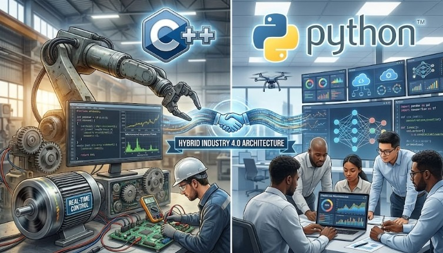

For decades, C and C++ have been the undisputed kings of the embedded and industrial world. Real-time constraints, memory management, and direct hardware access made them indispensable for PLCs and SCADA kernels. But recently, Python has been creeping down the stack.
The Case for C++
When you are writing a driver for a motion controller that needs to respond in microseconds, you cannot afford the overhead of a Garbage Collector. C++ gives you:
- Deterministic execution (Critical for Safety).
- Direct memory access.
- Mature toolchains for every microcontroller.
The Rise of Python in OT
However, automation is no longer just about PID loops. It's about Data. It's about connecting that PLC to the Cloud, running an ML model on the edge, or parsing JSON from a web API. Here, C++ is painful.
Python shines in:
- SCADA Scripting: Ignition SCADA uses Jython/Python for logic.
- Data Analysis: Pandas and NumPy are standard for analyzing historian data.
- AI Integration: TensorFlow and PyTorch are Python-first.
The Verdict
It is not an "Either/Or". The modern Control Engineer needs both. Use C++ (or Rust) for the low-level, hard-real-time control loops. Use Python for the supervisory layer, data plumbing, and AI integration. This hybrid approach is what powers modern Industry 4.0 architectures.
About the Author
Nay Linn Aung is a Senior Technical Product Owner specializing in the convergence of OT and IT.